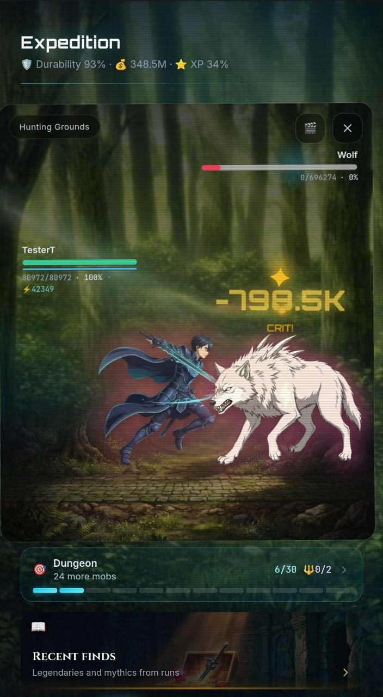
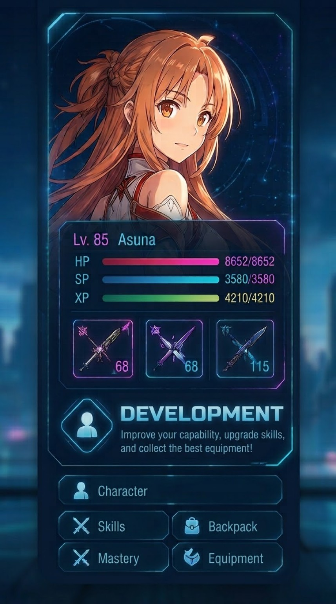
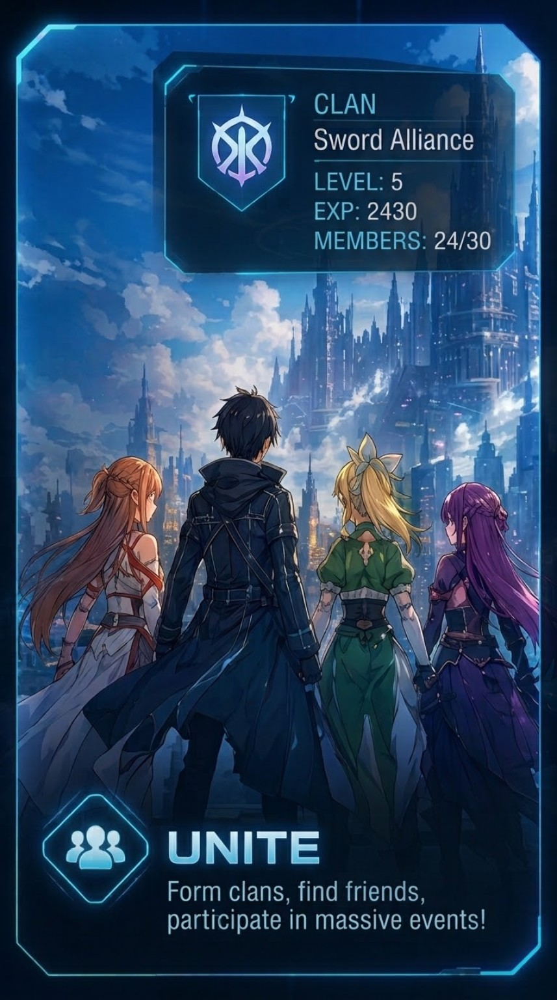
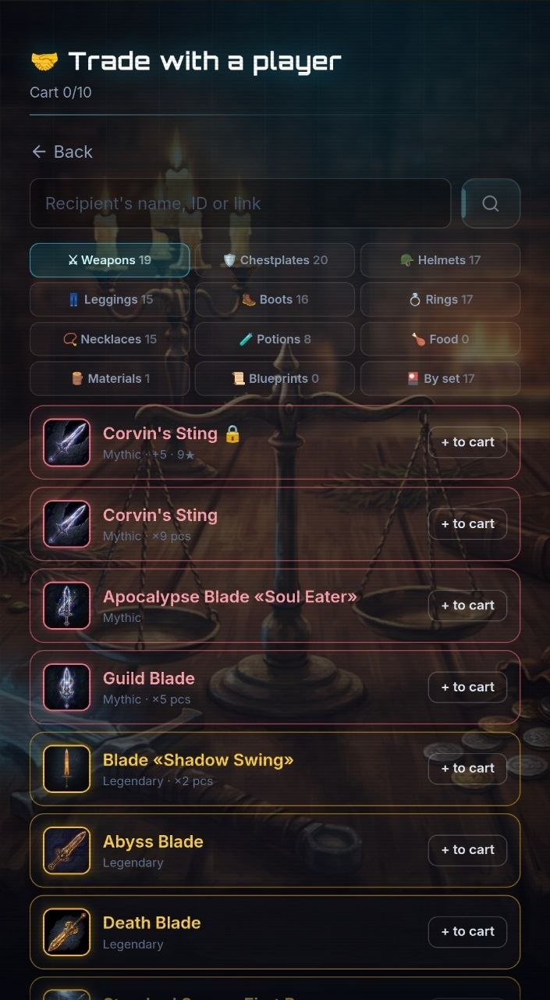
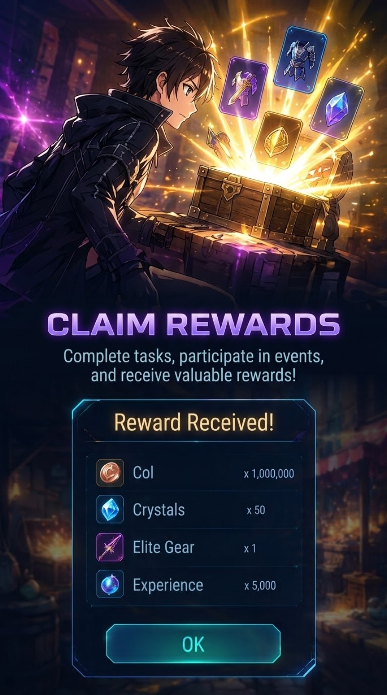

COMBAT
DROP IMAGE HERE
DROP IMAGE HERE
001 / COMBAT
СРАЖАЙСЯ
Бои с обычными противниками и боссами, критические удары, эффекты и скорость боя. Испытай разные классы и собирай билд под свой стиль.
BOSSES · CRITS · BUILDS
Текстовая MMORPG в мире Sword Art Online. Сражайся, развивай героя, объединяйся с другими игроками и поднимайся по 25 этажам.
Игра началась как текстовый бот и выросла в полноценный Telegram Mini App. Твой аккаунт и прогресс работают и в боте, и в Mini App.
Пять ключевых направлений, которые держат игру в движении.

Бои с обычными противниками и боссами, критические удары, эффекты и скорость боя. Испытай разные классы и собирай билд под свой стиль.

Исследуй 25 этажей, улучшай персонажа, экипировку и способности. В игре есть инвентарь, кузница, питомцы, рыбалка и другие системы.

Создавай и развивай клан, участвуй в войнах за территории, заключай союзы, проводи контратаки и управляй казной.

Рынок, ресурсы и внутриигровая экономика постоянно меняются. Баланс экономики сейчас активно перерабатывается.

Рейдовые боссы, Battle Pass, события и ежедневные активности. Telegram Stars уже поддерживаются в игре.
Листай дальше — элементы пространства перестраиваются вместе с прокруткой, как живой интерфейс игры.
Собирай группу, выбирай класс и проходи контент вместе. Multiplayer сейчас находится в beta и продолжает развиваться.
История развития Айнкрада. Открывай нужную дату — новые записи можно добавлять бесконечно.
5 новых этажей довели Айнкрад до 25. Multiplayer — до 4 игроков. Идёт работа над экономикой. Добавлены Telegram Stars. Следующий этап — визуальный апгрейд, 3D-объекты и переработка Mini App.
Полноценный Telegram Mini App: анимированные бои, мобы, боссы, урон и эффекты. Переработаны клановые войны и рейдовые боссы, исправлен прогресс 11 этажа и множество ошибок.
Авто-рыбалка получила ×5/×10 и пакетные подписки. Усилен «Чумной Завет», улучшены кланы и кузница. Закрыты дюпы, ошибки обмена, крафта, рынка и повторных наград Мирового босса.
Авто-рыбалка: 100 забросов одним запуском. «Собиратель» и «Взломщик» переработаны, экономика осколков пересчитана на долгий эндгейм. Вознесение дополнительно сбалансировано.
После релиза классов и 20 этажа исправлены классовые баффы и навыки в рейдах и на Мировом боссе, улучшены Вознесение, бои и восстановление после сбоев. Оптимизировано ядро базы данных.
После 20 этажа открываются 8 боевых классов с деревьями навыков 40+ прокачек. Добавлены «Вершина Одиночества», Вознесение и звёздность — новый цикл развития персонажа.
Добавлены войны за 5 территорий, бонусы владения, блиц-захваты и укрепления. Переработаны клановые системы, ордера рынка, обмен, кузница, рыбалка, ежедневные задания профессий, пресеты и Battle Pass.
Переработаны награды клановых контрактов: больше золота, дополнительные награды за топовые места и часть дохода в казну. Добавлен ежемесячный рейтинг активности контрактов.
Разделены кулдауны Death Impulse, второй слот питомца стал полноценным, улучшены кузница, дома и автобой. Исправлены экономические уязвимости и обходы закрытого контента.
18 и 19 этажи, Battle Pass #1, новые клановые контракты и хранение, новый PvP, переработанная кузница, глобальные события рыбалки, еда и временный VIP.
Добавлены Небесные Врата и Извивающиеся Глубины с новыми боссами и механиками. Появился мифический сет «Чумной Завет».
Запущено событие в память о погибших первопроходцах 21 этажа: искры памяти, капсула освобождения, лотерея, новые аксессуары и уникальные награды.
Снижены золотые множители на этажах 9–18 и цены редкой рыбы для борьбы с инфляцией. Начальные этажи стали мягче для новых игроков, дроп распределён по прогрессии.
Добавлены подсказки цен рынка, журнал клана, массовая ковка, улучшения интерфейса экипировки и рыбалки. Бот переведён на новую базу данных.
Исправлены бонусы Ниджи, переработаны описания 96 навыков профессий, пиры получили реальные бонусы, а эксклюзивы кузнеца убраны из обычного исследования.
Добавлены кастомные аватары через донат-магазин, улучшены частичные покупки на рынке, личные рейтинги клановых боёв и Death set. Закрыты эксплойты 12 этажа.
Добавлены десятки новых изображений предметов и рыбы. Kraken получил более короткий кулдаун, улучшены зелья, рулетка, рыбалка, боссы и награды 13 этажа.
Открыт Лес Руин и босс Greivin. Кланы получили новую структуру до 200 участников, статы подняты до 2000, переработаны PvP, рынок, рыбалка и пресеты.
После запросов игроков добавлен обмен предметами через Market → Exchange. В профиле появился ID игрока.
Тамеру добавлен стартовый питомец Моко. Пресеты расширены до 5 сборок, улучшены банк и взаимодействия между Telegram-игроками.
Исправлены оглушения, массовая ковка, звёздность, рыбалка, питомцы, AFK и неожиданные события исследования. Улучшена работа банка и брака.
Добавлены категории рынка и улучшено управление кланом. Исправлены кузница, зелья, рыбалка и уязвимость реакций Telegram-сообщества; нечестные Colls удалены.
Улучшено управление участниками клана, покупки в Crystal of Fate, банк, профессии и Telegram-навигация. Добавлен промокод для тестирования.
Бот переехал на выделенный Linux-сервер в Docker. Добавлены ежедневные резервные копии базы, GitHub Actions и Portainer. Подключены YooKassa и официальный канал поддержки.
Исправлены банк, предпросмотр PvP, уведомления рыбалки, турниры, выбор платформы, питомцы, Telegram proxy и проблемы VK.
На 20 уровне открылись профессии Повар, Кузнец, Тамер и Рыбак с ветками навыков и титулами. Улучшена рыбалка и исправлено более 35 проблем.
Расширены награды VIP: от эпических и легендарных сетов до 5 мифических предметов на VIP12. Дополнительные забросы рыбалки теперь масштабируются с VIP.
SAO запущена в Telegram: тот же мир, контент и механики, что и во VK. Добавлена привязка VK↔TG и синхронизация аккаунта.
Стабилизирован Лес Иллюзий, усилены сеты, переработаны AFK-опыт и доход Colls, улучшены питомцы, рыбалка и временный VIP.
Добавлены 6 питомцев с тремя стадиями эволюции, кормлением и мини-играми. Расширен банк и переработан Crystal of Fate.
Открыт 12 этаж с пятью локациями, Нергалом в трёх фазах, финальным испытанием и случайными встречами.
Клановый рейд полностью переработан: кулдаун сокращён до 5 минут, до 72 атак, новая награда по рангам и масштабирование сложности.
Появился город Тафт на 11 этаже, таверна, Forest Gifts, Гильдия Рейнджеров и новые главы истории. Клановый рейд переработан.
Добавлены Crystal of Fate, обучающий пролог Арго и награды Пути Воина. Переработан прогрессивный налог банка и эффекты Intelligence/Insight.
Мировые боссы переведены на обычную боевую механику, добавлены 4 босса и новый скин Zero. Исправлены гача, звёздность и баланс рыбалки.
Добавлена закалка до 10 звёзд с возрастающей стоимостью и шансами. Мировой босс получил существенно больше HP, а роли участников стали видимыми.
Добавлены награды за активность VK, Colls стали единым названием валюты, уточнён график World Boss. Исправлены рыбалка, рынок и клановые рейды.
Запущены World Boss по выходным с ролями и наградами по вкладу. Добавлена система реферальных скидок и бонусов, а также временные бонусы этажей.
VIP1+ получил автобой: от 5 до 93 боёв в зависимости от VIP, с ограничениями по боссам, сводкой результата и остановкой.
Исправлены автоприём в клан, сброс ежедневных заданий, редкий краш боя, расчёт баффа садовника и награды за «Могилу Героя».
Добавлена рыбалка с удочками, наживкой, редкостями рыбы, заданиями и коллекцией. Исправлена работа процентов банка и Shadow Merchant.
Изначально игра была текстовой RPG во VK: 11 этажей, бои, боссы, кланы, PvP, рынок, профессии и социальные системы. С этого этапа проект начал быстро расширяться.
Присоединяйся к игрокам, следи за обновлениями и обсуждай развитие SAO MMO-RPG.